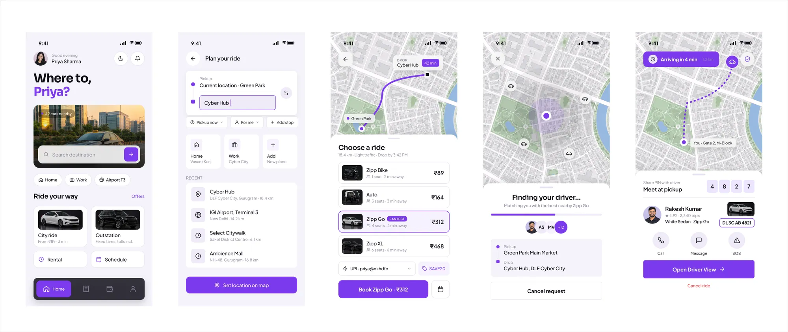
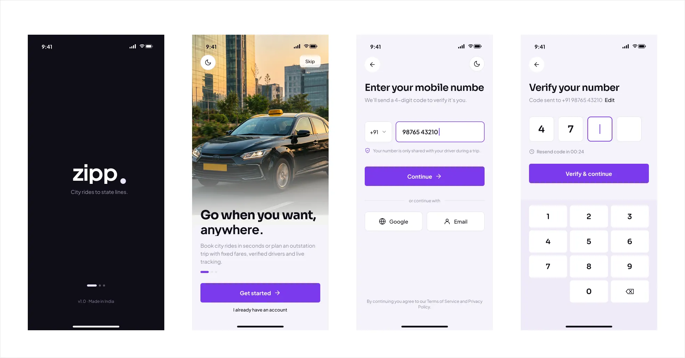
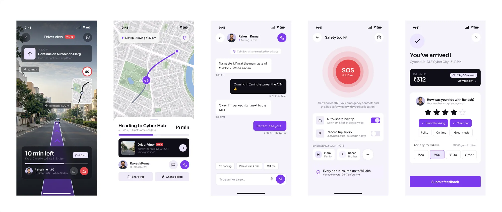
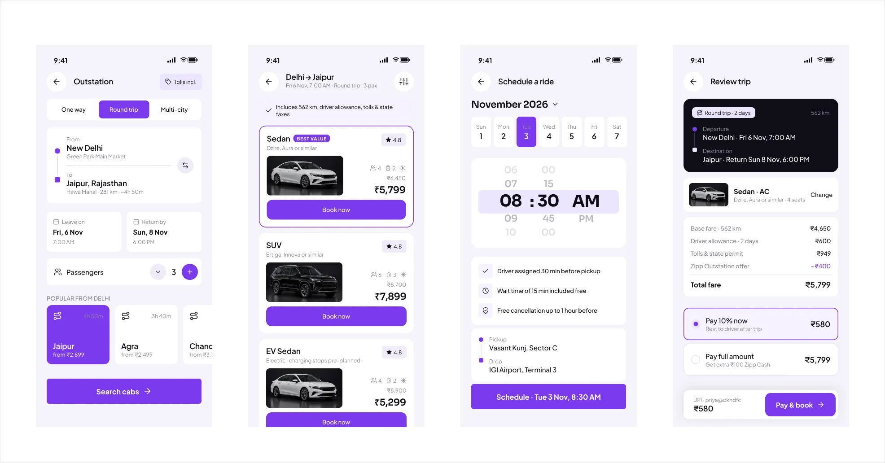
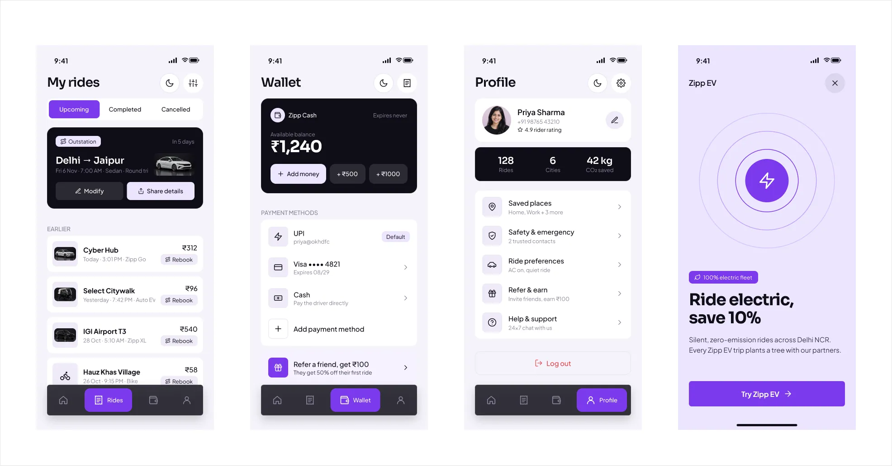
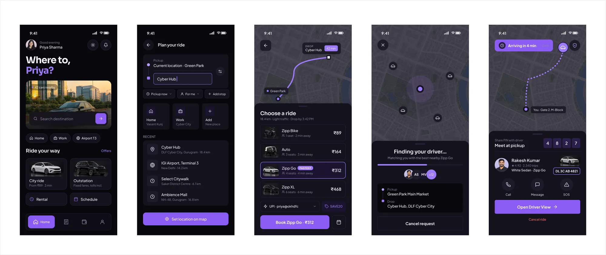
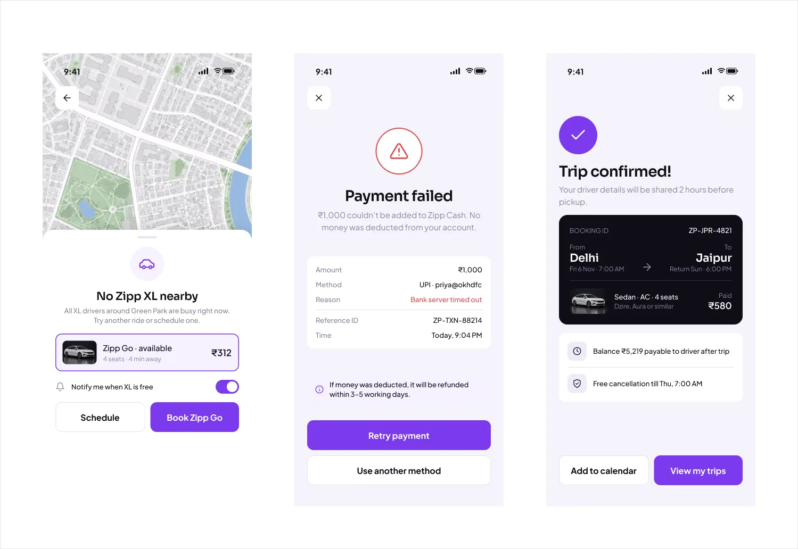
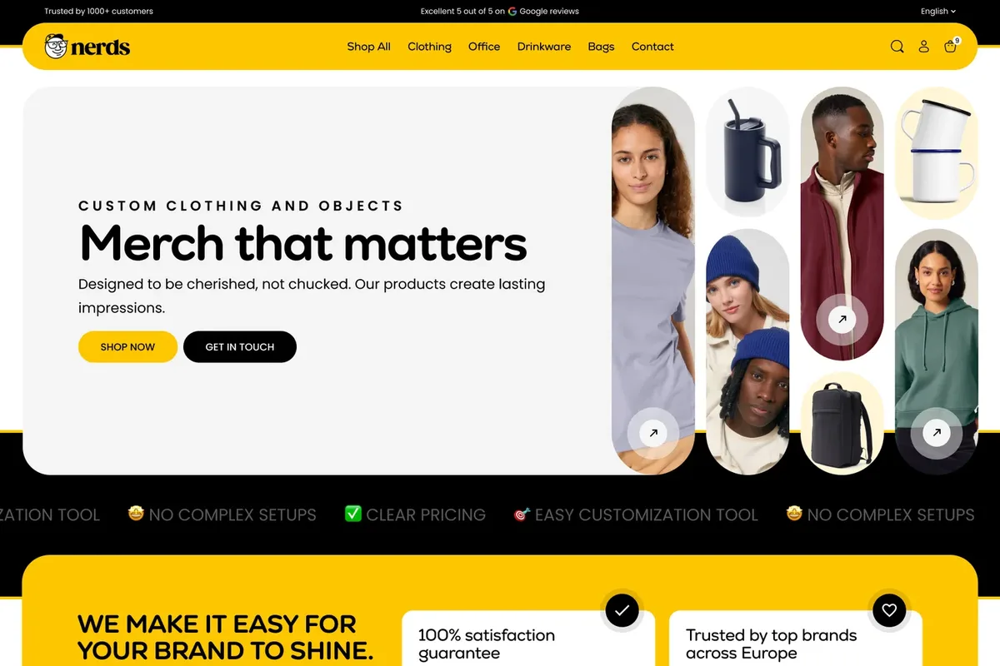

ZippRide hailing app
Ride booking that feels fast and safe. - Ride hailing app UI/UX case study
City rides, intercity trips, live tracking and a wallet, designed in light and dark mode.

01Overview
City rides, intercity trips, live tracking and a wallet, designed in light and dark mode.
Zipp is a ride-hailing app for city and intercity travel in India. I designed the full rider experience: onboarding, booking, choosing a ride, live trip and safety tools, intercity scheduling, wallet and rewards, settings and every success and error state, in both light and dark themes.
02The challenge
What had to be solved
Riders book in a hurry, often outdoors and at night. They need a destination, a price and a driver in seconds, and they need to feel safe once the trip starts.
Design goals
- Book a ride in as few taps as possible
- Make the live trip and safety tools obvious
- Support scheduled intercity trips
- Design every state, including failures
03Process
How I approached it
- Map the tripOnboarding, booking, driver arrival, live trip, rating and payment as one flow.
- Design both themesLight and dark versions of every screen, from the same components.
- Safety in the tripSOS, trip sharing and driver details stay one tap away.
- States and extrasNo cars nearby, payment failed and trip confirmed each got a screen.
04Onboarding
Phone number to first ride.
A simple splash, value screen, phone sign-in and OTP verification.

05City ride booking
Where to? Answered in seconds.
Search, saved places, ride options with prices and live driver search, all on one map-led flow.
06Live trip and safety
Safety tools that are always in reach.
Driver arrival, live route, SOS, trip sharing and rating at the end.

07Outstation and intercity
Plan longer trips ahead.
One-way and round trips, date and time picker, cab choice and a full fare breakdown.

08Account, wallet and rewards
Payments and perks in one place.
Ride history, wallet balance, profile and an electric-ride reward offer.

09Dark mode
Built for night rides.
Every flow has a dark version with the same hierarchy, easier on the eyes at night.

10States and components
Designed beyond the happy path.
No cars nearby, payment failed and trip confirmed states, plus the shared component and icon set.

11Decisions
Key design decisions
The map stays visible while booking happens in a bottom sheet, so riders always see where they are.
Night riding is common, so both themes were designed together rather than inverting colours later.
Payment failures and no-car states offer a next action instead of an error message.
12Design system
Visual language
Electric violet for actions and route lines, near-black surfaces in dark mode and soft grey in light mode, with large tap targets for one-handed use.
TypeInter, large tap targets
13Outcome
What was delivered
Zipp covers the full rider journey across eight flows and two themes, from first sign-in to rating the driver, with safety tools and failure states designed in.
If the project continues, next I would:
- Design the driver app
- Add shared rides
- Test the booking flow outdoors in bright light
Next project
NerdsMerch that matters.View project